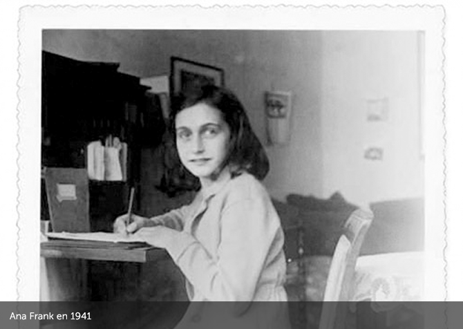

El 12 de junio de 1942, Ana cumplía 13 años y recibía de regalo un Diario al que llamó
Kitty y al cual confiaría todos sus secretos.
Sábado, 20 de junio de 1942.
(...)
“Después de 1940, nuestra buena época iba a terminar rápidamente: ante todo la guerra, la capitulación, y la invasión de los alemanes llevándonos a la miseria. Disposición tras disposición contra los judíos. Los judíos obligados a llevar la estrella, a ceder sus bicicletas...
Así seguíamos tirando, sin hacer esto, sin hacer aquello, Jopie me dice siempre: “No me atrevo a hacer nada, de miedo a que esté prohibido”. Nuestra libertad, pues, está muy restringida: con todo, la vida es aún soportable.”